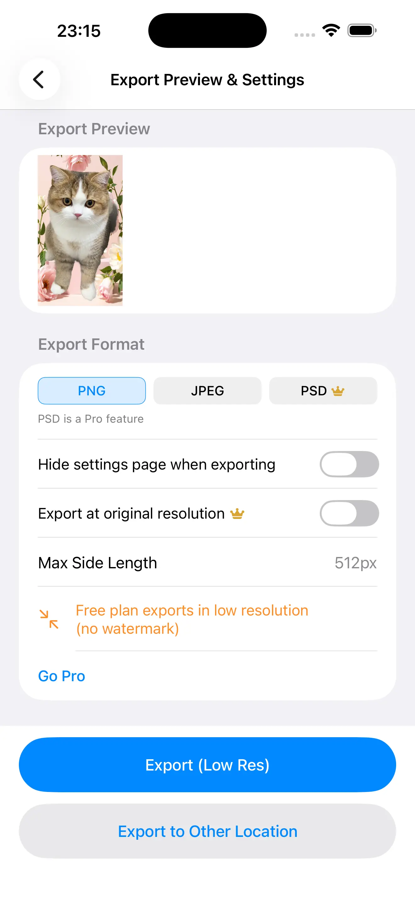

Transparent background PNG, flat JPG, or — on Pro — a layered PSD at your photo's original resolution up to 8192px. Three different files, three different jobs. Here's how to pick the one your destination actually accepts, and how to check that the transparency survived.
Because on a phone, "transparent" is usually a preview effect rather than something the file itself carries. The checkerboard you see while editing is the editor drawing behind your subject — the moment the image is written to a format or a pipeline with no room for an alpha channel, that information simply isn't there.
The still images a phone camera produces are built to hold photographs — colour, not a separate transparency channel. A cutout result has to be deliberately written into a format that supports one.
Editors paint a pattern behind cut areas so you can judge edges. Nothing in that pattern travels with your subject, so a file that looked transparent can land somewhere completely solid.
Chat apps, social uploaders and quick-save paths routinely convert an image again for size and compatibility. A second conversion is exactly where an alpha channel gets flattened into a background.
That's the whole source of the "the app must have failed" complaint: the mask was fine, the container wasn't. Which is why the format decision belongs at export time, not somewhere downstream.
PNG is the one built for this. Every pixel carries colour plus its own alpha value, so a cutout exports with real transparency — what the app describes as an alpha channel out of the box, with no separate "make it transparent" step after the cut.
No, and this isn't a limitation of any particular app — it's how the format is defined. JPEG has no alpha channel to write to, so a cut-out exported as JPG is composited onto a solid background at the moment of export and that background becomes part of the picture permanently.
PNG and JPG both hand over one flattened rectangle of pixels — the answer to your editing session, but nothing to keep editing. A layered PSD — a Pro feature — hands over the stack instead: the transparency is stored as the subject sitting on its own layer rather than baked into the canvas.
The app keeps text and cut-out objects in one unified layer model that you reorder, select and delete like a design tool — and the layered export carries that stack rather than merging it down.
Whoever opens the file can nudge the subject, swap the backdrop, or switch a caption off — the things you'd otherwise have to redo from the original photo.
A finished flat deliverable and an editable working file can come from one composition, so a review round doesn't restart the whole cutout.
Rule of thumb: if someone else is going to touch the image after you, export the stack. If nobody will, export the picture.
On Pro, exports run at your photo's original resolution, up to a maximum of 8192px; the free tier exports at a reduced resolution. The preview you approved is replayed at the size you chose, which is the part that decides whether print, cropping and zoom views are workable at all.

| Working resolution | Print size from an 8192px long edge (Pro) | Where that lands |
|---|---|---|
| 300 DPI | About 27 inches / 69 cm on the long side | High-density print — the size most print workflows ask for before they start complaining |
| 150 DPI | About 54 inches / 139 cm | Large-format and viewing-from-a-distance output, where dots aren't judged up close |
| 72 DPI | About 113 inches / 289 cm | Screen-only maths; useful for scale, meaningless as a sharpness target |
Same cutout, six very different endings. The deciding question is never "which is best" — it's whether transparency has to survive the trip.
| Destination | Export | Why |
|---|---|---|
| Website graphics | PNG at original resolution (Pro) | Alpha has to reach the browser, and lossless edges keep text and hard product outlines clean at any zoom |
| Overlay onto another photo | PNG | Transparent subject with soft per-pixel edges at the boundary — JPG would arrive with a backdrop already glued to it |
| PNG at original resolution (Pro), or PSD (Pro) if a studio handles prep | Print wants pixels, not resampling: the full-resolution ceiling is what keeps the subject sharp at size | |
| Sending to a designer | Layered PSD | They continue your stack instead of re-cutting a flattened image to get one layer back |
| Platform listing image | JPG on a deliberate backdrop, or PNG if transparency is accepted | A solid, evenly filled background is what listing tiles expect — and it removes any guess about how the file gets re-encoded |
| Quick share to a phone | JPG | Smallest, universally accepted, and nobody downstream needs to composite it |
It's the leftover background, hiding in the transition. At the border between subject and backdrop, pixels are genuinely part of both, so the mask gives them partial transparency — and the colour they keep is a little of the old background. On the checkerboard you can't see it. Put that same PNG on a dark page, or scale it up, and a halo appears.
Contracting the alpha edge discards that outermost band of mixed pixels, which is what removes the fringe on firm outlines. A little goes a long way — push it too far on hair and you start eating strands.
Feathering ramps the transparency instead of ending it abruptly, so the boundary stops reading as a cut-out ring. Contraction and feathering are live controls, so you can judge both against the background you're actually shipping to.
Where the transition is wrong rather than just soft, the erase and restore brushes clean it non-destructively with undo — and re-matting with another model is often faster than repairing a fringe after the fact.
Fix the edge before you choose the format, not after: a halo baked into a JPG is permanent, and the same fringe inside a PSD is something your designer will find eventually.
Transparent PNG, high-res JPG, or — on Pro — a layered PSD at original resolution up to 8192px, chosen at export and cut out entirely on your iPhone.
Download Cutano